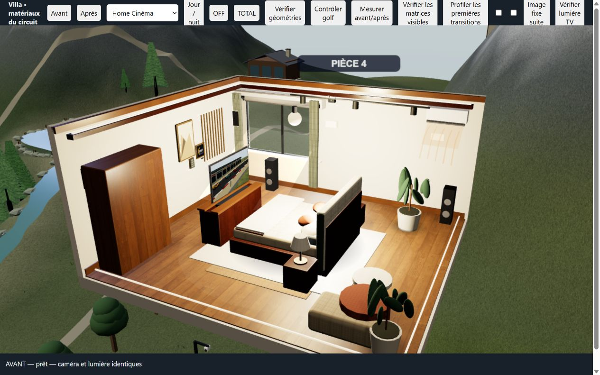

Avant · une lumière par TV

Candidat local 2.3.20 · aucune publication

Profil répété : 43 → 31 programmes graphiques · pire appel de rendu 41 → 22 ms · géométrie, textures et résolution conservées.
MutationObserver : erreur non reproduite sur quatre chargements complets supplémentaires (2 072 appels contrôlés). Diagnostic encore ouvert.